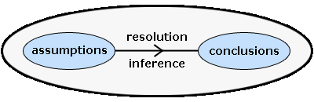

logic programming
links:
- main page
- History of artificial intilligance
- machine learning
- logic programming
subject
introduction to logic programming
Artificial Intelligence (AI) is the ability for an artificial machine to act intelligently. Logic Programming is a method that computer scientists are using to try to allow machines to reason because it is useful for knowledge representation. In logic programming, logic is used to represent knowledge and inference is used to manipulate it.
The logic used to represent knowledge in logic programming is clausal form which is a subset of first-order predicate logic. It is used because first-order logic is well understood and able to represent all computational problems. Knowledge is manipulated using the resolution inference system which is required for proving theorems in clausal-form logic. The diagram below shows the essence of logic programming.
Clausal-Form Logic

Prolog, PROgramming in LOGic, is a declarative programming language which is based on the ideas of logic programming, such as those discussed above. The idea of Prolog was to make logic look like a programming language and allow it to be controlled by a programmer to advance the research for theorem-proving.
logic programing
.png)
All logic programming languages can be generalised into a category of programming languages, called declarative languages. They share the same idea of analysing computations. The computation is satisfied by specifying the properties of the correct answer. Logic programs can be interpreted using two main concepts: truth and logical deduction.
Truth derives whether or not the computation in the program is true, under the implementation of the program symbols.
Logical Deduction determines whether a logical clause is a consequence of the program. All logical programming languages have exact operational meaning and most support the processing of finite sets. The programs themselves are instructions for execution by a compiler. These instructions are always interpreted as logical statements and clauses, and the result of the execution is a logical consequence of the computations in it. Using logical languages and any other declarative language offers three main advantages:
- Logic programming languages are classified as high level languages as they implement computation's logic rather than mechanics. They have a powerful pattern matching mechanism as well as good memory management (stacks and pointers). This makes them ideal for expressing complex ideas and algorithms.
- Logical programming languages allow data to be represented both extensionally and intentionally. Intentional representation can also generate related representations for example adjacency lists for easy access of the following data elements. These can be derived dynamically from configuration rules.
- Another advantage of logic programming languages is that they are well suited for rapid interpretation of the data structure and the code to implement very complicated ideas. Due to their compact syntax and logical nature experienced programmers find the code simple to read and debug. From the programmers point of view the difficulty of coding is vagueness in human thinking. However Prolog coding is easier as the syntax is very short and precise.
summary
Logic programming has a number of advantages and disadvantages, and here are some of them:
advantages:
- Logic programming can be used to express knowledge in a way that does not depend on the
implementation, making programs more flexible, compressed and understandable.
- It enables knowledge to be separated from use, ie the machine architecture can be changed
- It can be altered and extended in natural ways to support special forms of knowledge, such as meta-level or higher-order knowledge.
- It can be used in non-computational disciplines relying on reasoning and precise means of expression.
disadvantages:
- Initially, due to insufficient investment in complimentary technologies, users were poorly
served.
- In the beginning, poor facilities for supporting arithmetic, types, etc. had a discouraging effect on the programming community.
- There is no adequate way of representing computational concepts found in built-in
mechanisms of state variables (as is usually found in conventional languages).
- It can be used in non-computational disciplines relying on reasoning and precise means of
expression.